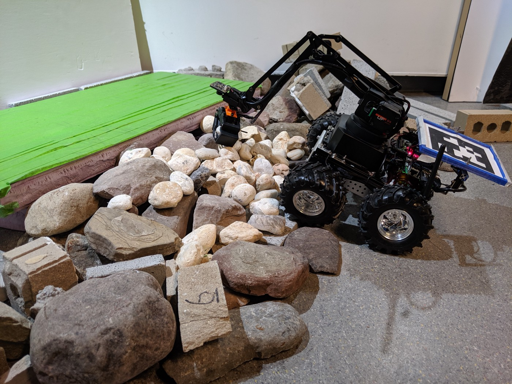
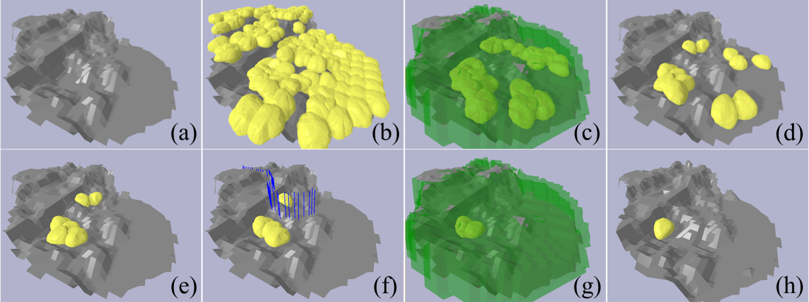
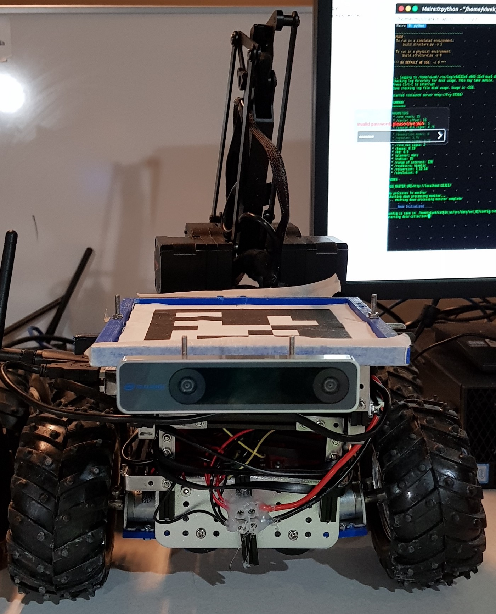
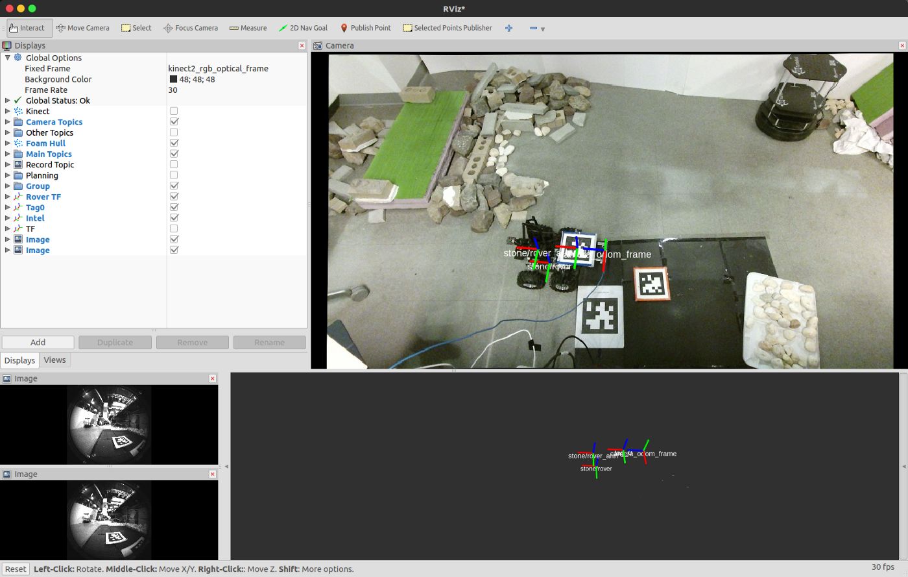
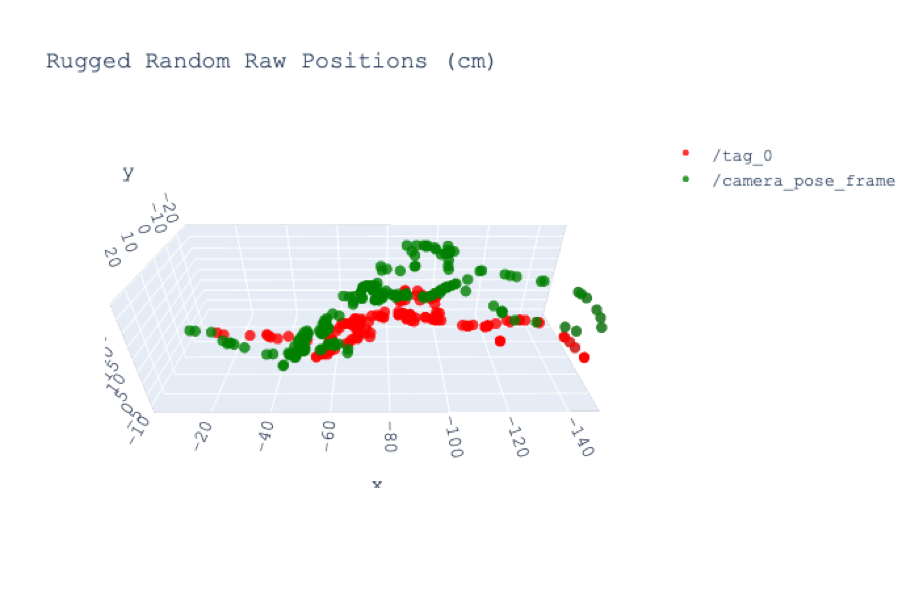
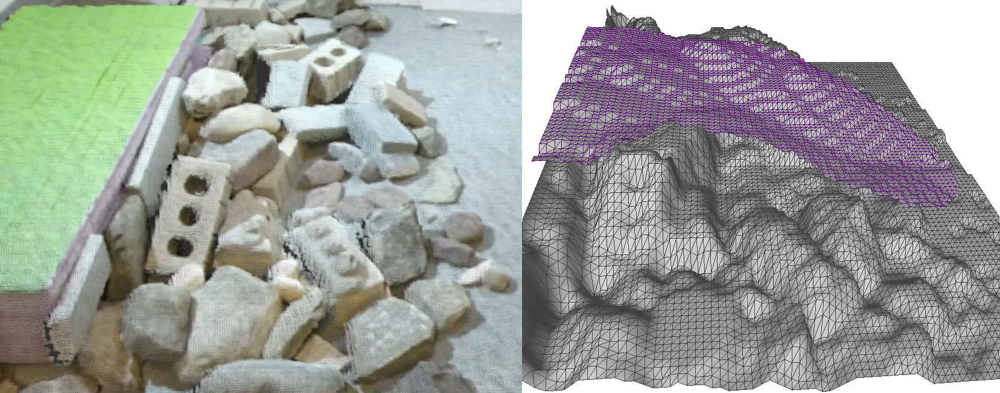
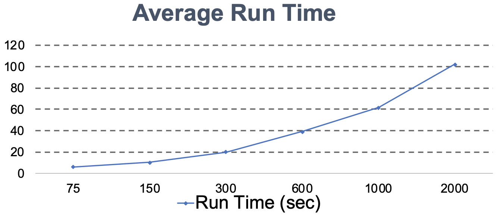
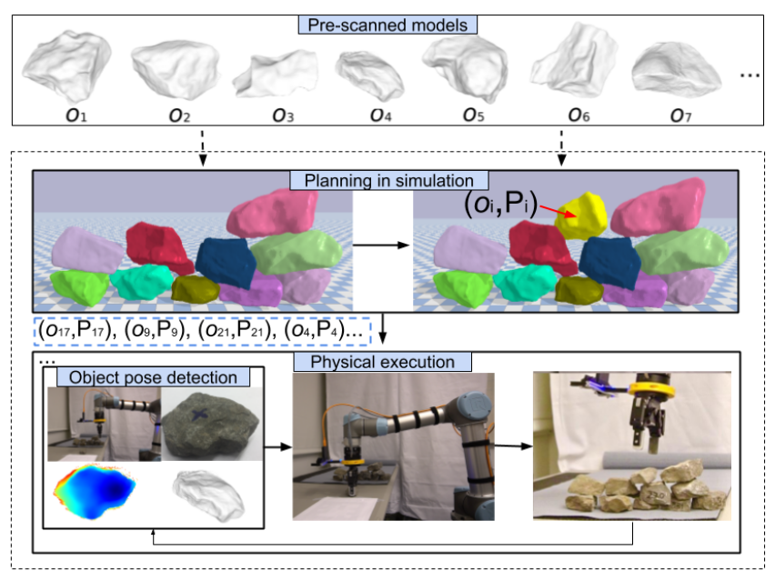

My Research Includes:
Robotics, AI, Autonomous SystemsDavis Hall 337
© 2019 Jiwon Choi
© 2019 Jiwon Choi

We develop a specialized construction algorithm and robotic system that can autonomously build motion support structures with previously unseen objects. The approach is based on our prior work on adaptive ramp building algorithms, but it eliminates the assumption of having specialized building materials that simplify manipulation and planning for stability. Utilizing irregularly shaped stones makes the problem significantly more challenging since the outcome of individual placements is sensitive to details of contact geometry and friction, which are difficult to observe. To reuse the same high-level algorithm, we develop a new physics-based planner that explicitly considers the uncertainty produced by incomplete in-situ sensing and imprecision during pickup and placement. The resulting system can build structures with more than 70 stones, which in turn provide traversable paths to previously inaccessible locations.

We propose a method that utilizes simulations to incorporate the uncertainties in the world description and in the robot dynamics. The physics simulator needs to be tuned to favor speed over accuracy to allow for a sufficient number of simulated samples of the world model in reasonable time.
The video shows the 5 experiments that we have done (Video 1). In the video, the robot is deployed on a terrain that is navigable and has access to an abundant supply of stones from a specified region (quarry). The robot system is tasked to build a navigable path to the target area using the stones from the quarry. Starting from the largest stone option, the robot estimates a deposition pose. If no pose was found, it either: (a) moves to the next largest stone until it finds a stone with a valid deposition pose, or (b) requests for more options. Once the building process is completed, the robot finds a navigable path in the structure and attempts to reach the target area. In the experiments, the robot's sensing range is large enough to see the target structure.
The presented system is able to build navigable structures over unstructured terrain with found stones without prior knowledge of either the stones or the environment. The system can operate fully autonomously over many hours and find, choose, and deposit stones to build motion support structures.
*This work has accepted to ICRA'20, supported by NSF#184634 and CAPES #013584/2013-08.

By knowing the fact that detecting and publishing the AprilTag coordinates are time-consuming, attaching Intel® RealSense™ Tracking Camera T265 to compare and analyze these two performances, with TF (transformations) system. If the tracking camera's performances in terms of time turn out to be better, then we will use the AprilTag to acquire the position of the robot in the world frame at first, then we will be relying on the tracking camera to track the position of the robot. The robot's location will be captured through the static global Xbox camera, by capturing the AprilTag attached to the robot, which we already set up beforehand.

Visualization of the datasets is challenging due to the offset distance between the center of the AprilTag and the Intel Tracking Camera T265 (Fig. 2). Due to this offset, the visualization of the 3D plot does not look intuitive -the the flow of trajectories are same, but there always exists a distance gap.
Data Collected as follows:

This last experiment has the most difference between the tracking camera and the AprilTag. Unlike the first three 3D trajectory, once I compare the actual trajectory of the robot (Video 1) to the 3D scatter plot (Fig. 3), there are some missing coordinates in the trajectory detected by the AprilTag. Once you take a look at the x-axis from -120 to -140, some of the red coordinates are missing -these missing coordinates does not make sense because the robot cannot just jump from one position to another. However, in case of the camera, it precisely and continuously detected the trajectory where the robot was circulating around. Thus, in can be inferred that there are some delays exists in the AprilTag; in other words, the performance of the AprilTag is relatively slower compared to the tracking camera.
Read more at:

Given a terrain height function (Fig. 1), the Minimal Additive Ramp Structure (MARS) provides the upper bounds for the least additive construction for building perfect motion support structures and the MARS Gap provides the navigable substructure to build.
Physics simulators aim to reduce the simulation-to-reality gap by employing accurate shape description of the objects. We utilize a sample-based physics simulation method that models the uncertainties in the world description, and performs approximate forward simulations using samples from the models. Given a stone shape distribution and terrain height function, multiple stone meshes are evaluated in order to find optimal deposition poses.

In order to make this project work as designed, we need to perform a large amount of simulation runs. Since the terrain and stones are both noisy representations of the real world, we do not want to perform accurate, computationally expensive simulations. Hence, we look at the tradeoff between accuracy and speed for different simulation parameters, to tune the simulator given the terrain height function and the object shape distribution.
We use pybullet for rigid body physics simulations. The controllable parameters are given by the tuple (csim_time, citers, cmax_faces). We perform parameter tuning by comparing the performance and run times of the best possible setting, (0.004, 2000, 1500), with a mean run time of 58 seconds. Our parameter search favors speed over accuracy; it chooses a value that does not "deviate" greatly from the best setting, and has considerably lower run times. The parameter tuple (0.09, 300, 250) is selected, with an average run time of 9 seconds.
*This work has accepted to NERC'19, supported by NSF#184634 and CAPES #013584/2013-08.

Dry stacking with found, minimally processed rocks is a useful capability when it comes to autonomous construction. However, it is a difficult planning problem since both the state and action space are continuous, and structural stability is strongly affected by complex friction and contact constraints. We propose an algorithmic approach for autonomous construction from a collection of irregularly shaped objects. The structure planning is calculated in simulation by first considering geometric and physical constraints to find a small set of feasible actions and then refined by using a hierarchical filter based on heuristics. These plans are then executed open-loop with a robotic arm equipped with a wrist RGB-D camera. Experimental results show that the proposed planning algorithm can significantly improve the state of the art robotics dry-stacking techniques.
*This work has accepted to FSR'19, supported by NSF#184634 and the SMART Community of Excellence at University at Buffalo.